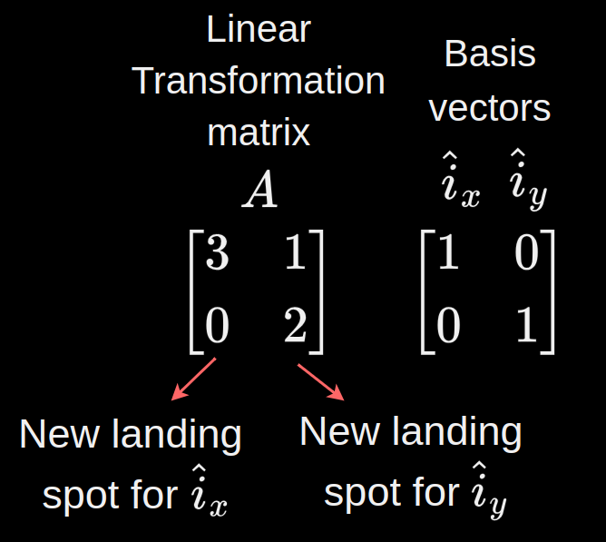
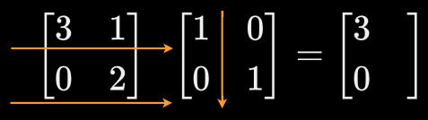
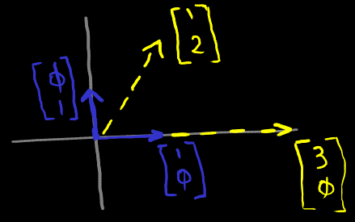

Logbook
Jayson Wynne-Thomas
Last modified
.
Linear Transformation
Overview
A linear transformation described by a matrix $A$ can be thought of as the landing spots it moves a set of basis vectors to.



Example of $A$ applied on basis vectors